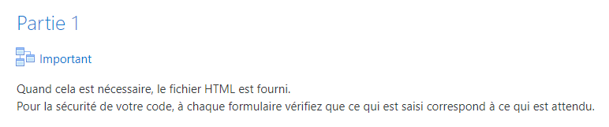
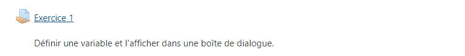

Liste exos JavaScript (Partie 1) avec La MANU
Vers les differents exercices:

Exercice 1
voir Exo 1

Exercice 2
voir Exo 2
Exercice 3
voir Exo 3
Exercice 4
voir Exo 4
Exercice 5
voir Exo 5
Exercice 6
voir Exo 6
Exercice 7
voir Exo 7
Exercice 8
voir Exo 8
Correction Exercice 8 par Laurent
voir Correction exo 8
vers partie 2 JavaSript
vers partie JS2
ou
Close